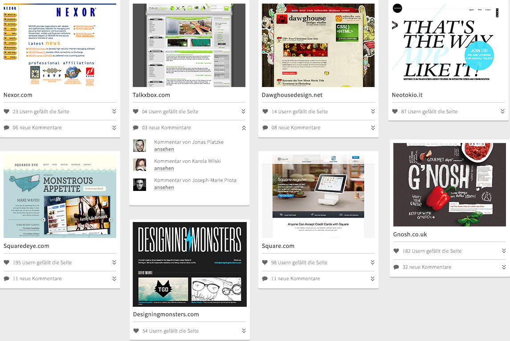

Evolution des Webdesign
Upload
Mein Profil
Account
Logout
1993
1996
2000
2003
2006
2009
2012
2013
Alle Trends
Kreise
Grid Layouts
Icons
Letterpress / Schleifen
Retro
Condensed Schriften
Skeuomorphismus
Diagonale Linien
Jahre
Hi, Philipp Seiffert
Aktivitäten an deinen Uploads

Start
About
Blog
Nach Oben
© 2013 evoluzzr - Evolution des Webdesign
Teilen
Impressum
Datenschutzerklärung
1993
1996
2000
2003
2006
2009
2012
2013
Alle Trends
Kreise
Grid Layouts
Icons
Letterpress / Schleifen
Retro
Condensed Schriften
Skeuomorphismus
Diagonale Linien